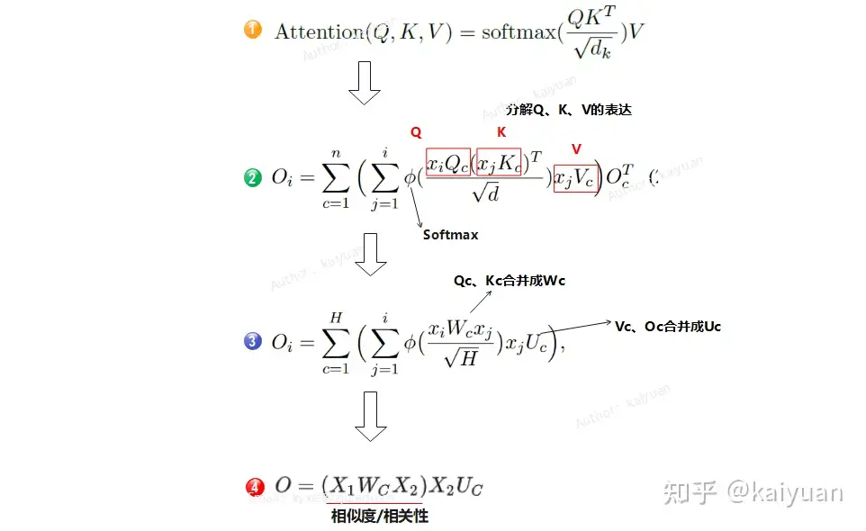
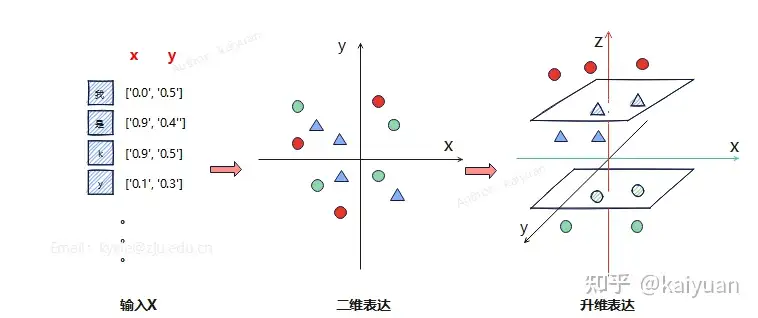
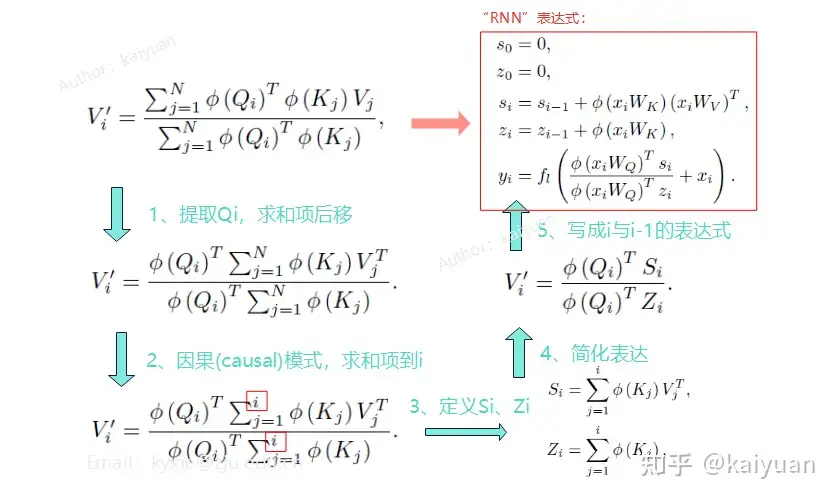
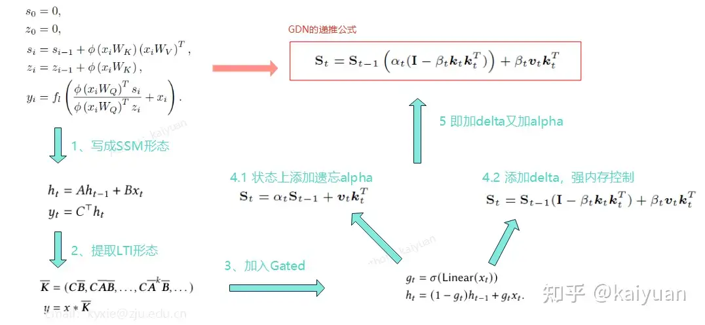
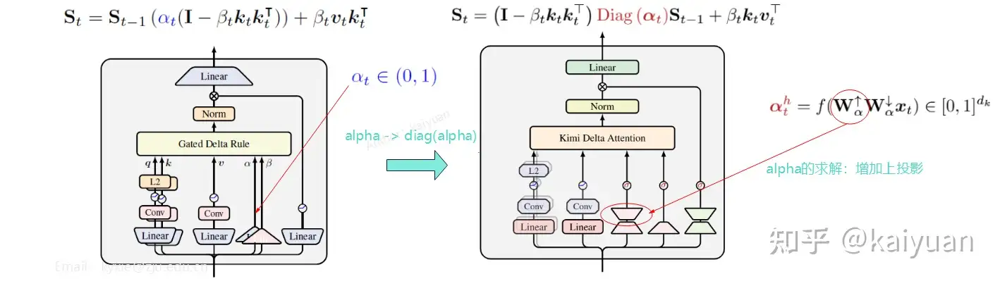
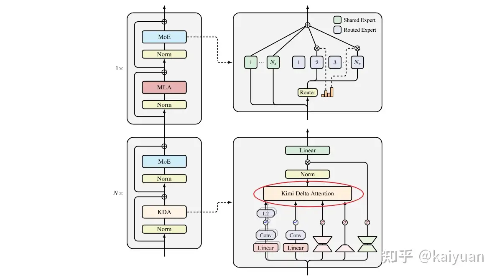

从普通 Attention 到 Kimi Linear：一篇循序渐进的理解指南¶
本文面向了解 Transformer 基础、但对 Linear Attention、DeltaNet 和 KDA 不熟悉的读者。目标不是罗列 Kimi Linear 的结论，而是从普通 Attention 开始，一步步说明它为什么出现、每一步解决了什么问题，以及它为推理系统带来了什么变化。
全文记号约定：正文自行书写的公式统一把单个 token 的 \(q,k\in\mathbb{R}^{1\times d_k}\) 和 \(v\in\mathbb{R}^{1\times d_v}\) 视为行向量；\(Q,K,V\) 由它们逐行堆叠。状态统一采用 \(S\in\mathbb{R}^{d_k\times d_v}\)。因此，相似度写成 \(qk^\top\)，写入状态写成 \(k^\top v\)，从状态读取写成 \(qS\)。引用图片则原样保留原作者的公式和转置位置，不受这一正文约定限制；原图使用列向量或混合记法时，图后会单独说明它与正文的对应关系。
| 对象或运算 | 维度 | 含义 |
|---|---|---|
| \(q,k\) | \(1\times d_k\) | 单个 token 的 query、key 行向量 |
| \(v\) | \(1\times d_v\) | 单个 token 的 value 行向量 |
| \(qk^\top\) | \(1\times1\) | query 与 key 的相似度标量 |
| \(S\) | \(d_k\times d_v\) | 压缩历史的状态矩阵 |
| \(k^\top v\) | \(d_k\times d_v\) | 把一组 key–value 关联写入状态 |
| \(qS\) | \(1\times d_v\) | 用 query 从状态中读取 value |
先记住全文的主线：
普通 Attention
每次查询都回看全部历史，准确但长上下文昂贵
↓ 用可分解核函数表示或近似 softmax 相似度，再利用结合律
Linear Attention
把历史压进固定大小的状态，高效但容易发生记忆覆盖和干扰
↓ 引入“先纠错，再写入”
DeltaNet
能定点更新已有记忆，但不擅长快速忘掉大片过时信息
↓ 加入遗忘门
Gated DeltaNet
可以整体控制记忆衰减，但一个 head 共用一个衰减率仍然较粗
↓ 将遗忘门细化到 key channel
Kimi Delta Attention（KDA）
更细粒度地管理有限状态，并设计适合 GPU 的分块算法
↓ 保留少量全局注意力兜底
Kimi Linear
约 3 个 KDA 层搭配 1 个全局 MLA 层的混合架构
如果只看 Kimi Linear 相对 Gated DeltaNet 的直接改动，可以先记住两个亮点：
- KDA 把每个 attention head 共用的单个衰减系数，变成了 \(d_k\) 个 channel-wise 衰减系数；
- 完整模型没有走纯线性路线，而是按约 3:1 混合 KDA 与全局 MLA。
下面的内容主要是在回答：这两个看似不大的改动，为什么会出现在这里。
1. 先从普通 Attention 讲起¶
1.1 Q、K、V 到底在做什么¶
假设上下文中有下面几句话：
可以把 Attention 想象成查询一叠卡片：
- Query（Q）表示“我现在想找什么”，例如“与小明住址有关的信息”；
- Key（K）表示“每张卡片的索引是什么”，例如“小明—住址”；
- Value（V）表示“卡片里真正保存的内容”，例如“北京”。
当前 token 的 Query 会和历史 token 的所有 Key 比较。越相关的 Key 获得越大的权重，对应 Value 对输出的贡献也越大。
对单个 query，Scaled Dot-Product Attention 可以写成：
它分为三步：
- 用 \(qK^\top\) 计算当前 query 与每个历史 key 的相似度；
- 用 softmax 把相似度变成和为 1 的权重；
- 按权重对所有历史 value 做加权求和。
在自回归语言模型中还会使用 causal mask：第 \(t\) 个 token 只能看到 \(1\ldots t\)，不能偷看未来。
需要注意，Q、K、V 并不是模型直接保存的汉字或标签，而是由当前层输入分别乘 \(W_Q\)、\(W_K\)、\(W_V\) 得到的向量。“索引卡片”只是帮助理解这些向量在计算中扮演的角色。
1.2 手算一次简化的 Attention¶
继续使用住址例子。假设 query 与三个历史 key 的相似度为：
经过 softmax 后，权重大约变成：
如果为了演示，把“北京”的 value 写成 \([1,0]\)，“上海”写成 \([0,1]\)，无关信息写成 \([0,0]\)，那么输出是：
结果明显更偏向“北京”。真实模型会同时使用多个 attention head 和数十到数百维的向量，但基本过程仍是“逐个比较历史位置，再按相关性汇总内容”。
1.3 普通 Attention 为什么效果好¶
普通 Attention 保存的是一份相对“原始”的历史：每个历史位置都有自己的 K 和 V。查询时，模型可以重新决定该关注哪几个位置。
它像档案室：资料虽然越来越多，但原始档案仍然在。只要 query 足够好，模型就有机会精确找到很早以前的一句话。
1.4 代价为什么会随上下文快速增长¶
设序列长度为 \(N\)：
- Prefill 时需要构造近似 \(N\times N\) 的注意力关系，计算复杂度随 \(N^2\) 增长；
- Decode 时，每产生一个新 token，都要让新 query 与前面 \(N\) 个 key 比较；
- 为了避免重复计算，推理服务会保存所有层、所有历史 token 的 K 和 V，也就是 KV Cache；
- 上下文越长，单个请求占用的 KV Cache 越大，可并行服务的请求就越少。
以单层为例，普通多头注意力的 KV Cache 大小近似为：
其中额外的 \(2\) 代表 K 和 V 两份缓存。完整模型还要再乘注意力层数。
这解释了一个常见现象：长上下文 Decode 往往不是算力不够，而是显存容量和读取 KV Cache 的内存带宽先成为瓶颈。
2. Linear Attention：能否不再回看全部历史¶
2.1 从矩阵乘法结合律看核心思路¶
先暂时忽略 softmax 和归一化，只看 Attention 的矩阵乘法骨架：
两种顺序结果相同，但中间量不同：
- \((QK^\top)V\) 先构造 \(N\times N\) 的 token 关系矩阵；
- \(Q(K^\top V)\) 先把历史汇总到固定形状的 \(K^\top V\)，再由 Q 读取。
这正是 Linear Attention 想利用的计算顺序。

图 1：从标准 Attention 提取相关性计算骨架。来源：知乎用户 kaiyuan 的回答。
但这只是复杂度直觉：标准 Attention 含有 softmax，不能直接这样移动括号。下一节将说明如何通过可分解核函数处理这个限制。
2.2 Softmax 阻断结合律：引入可分解核函数¶
对第 \(i\) 个 query，softmax Attention 可以写成归一化加权和：
这里的指数相似度必须在 \(q_i\) 与每个 \(k_j\) 做完点积后才能计算，分母又依赖当前 query 对所有 key 的分数。softmax 不是矩阵乘法，不能随着括号一起移动。因此一般有：
所以正确的逻辑不是“softmax Attention 满足结合律”，而是：
softmax Attention 不能直接交换乘法顺序
↓
寻找一个能拆成 query feature × key feature 的核函数
↓
用这个核替换或近似 softmax 的指数相似度
↓
此时才可以利用结合律先汇总 K/V
具体来说，希望找到一个特征映射 \(\phi\)，使相似度可以写成：
如果目标是近似原始 softmax Attention，那么对应的目标 kernel 是：
于是希望：
等式右边已经把 query 和 key 分开：\(\phi(q)\in\mathbb{R}^{1\times m}\) 只依赖 query，\(\phi(k)\in\mathbb{R}^{1\times m}\) 只依赖 key；两者相乘得到标量。这种“可分解性”才是后面使用结合律的关键。
实践中有两条不同路线，不应混为一谈：
| 路线 | 做法 | 与原 softmax 的关系 |
|---|---|---|
| kernel replacement | 直接选择容易计算的正值特征映射，例如 \(\phi(x)=\operatorname{ELU}(x)+1\) | 定义了新的相似度，并非严格近似 softmax |
| kernel approximation | 用随机特征等方法近似指数 kernel | 目标是近似原来的 softmax Attention，例如 Performer 路线 |
因此，“用核函数来近似 softmax”是很好的入门直觉；严格地说，一些 Linear Attention 方法在近似 softmax，另一些则直接用新的 kernel 替换它。
原回答用“把二维数据映射到更高维空间”说明 \(\phi\) 的作用：变换后，原本不容易表达的关系可能变得更容易计算。

图 2：核函数升维的直观示意。来源：知乎用户 kaiyuan 的回答。
这张图只是在解释 feature map 的一般直觉，并不表示 Linear Transformer 的 \(\phi\) 一定显式构造一个三维坐标。对 Linear Attention 而言，升到什么空间不是唯一重点；更重要的是让相似度能够分解成 \(\phi(q)\phi(k)^\top\)。
把可分解 kernel 代回 Attention，对第 \(i\) 个 query 有：
如果 \(\phi(q)\phi(k)^\top\) 是近似，整个输出也相应是对 softmax Attention 的近似；如果它定义的是一个新 kernel，上式就是该新注意力机制的精确表达。
现在定义两个与当前 query 无关的状态：
输出便成为：
在 causal 场景中，这两个状态可以逐 token 递推：
求和中的 \(S_i\) 和 \(z_i\) 不再随当前 query 改变，所以可以先累计和缓存。到这里，矩阵乘法结合律才真正转化成固定大小的 recurrent state。
下面这张图展示了完整的变形顺序：先把与 query 无关的求和项移到一起，再利用 causal 条件把求和上限从整个序列改为当前位置 \(i\)，最后把两项分别定义为状态 \(S_i\) 和 \(Z_i\)。

图 3：Linear Attention 化为递归状态的推导路径。来源：知乎用户 kaiyuan 的回答。
图 3 保留原作者记法。其核心重排按单向量为列向量理解：原图定义 \(S_i^{\mathrm{src}}=\sum_j\phi(K_j)V_j^\top\)，再用 \(\phi(Q_i)^\top S_i^{\mathrm{src}}\) 读取；正文的行向量版本则是 \(S_i=\sum_j\phi(k_j)^\top v_j\) 和 \(\phi(q_i)S_i\)。这里两种状态的形状其实相同，只是单向量的书写方向不同。原图右上角又使用了 \(x_iW\) 这种常见的行向量写法，因此不宜把原图的每一个转置都当成一套严格统一的维度约定；正文公式已经按开头的维度表重新整理。
图中的两个状态分工不同：\(S_i\) 是 attention memory，保存 key/value 的关联；\(Z_i\) 是 normalizer memory，只用于计算分母。后续 DeltaNet/KDA 的递推式主要讨论前一种矩阵记忆，并不意味着 \(Z_i\) 被简单原样搬进了 KDA。
这里的重点不是某一种 \(\phi\)，而是历史已经从“长度为 \(N\) 的 token 列表”变成了“尺寸不随 \(N\) 增长的状态”。
从计算表示上看，历史由不断增长的 KV 列表压缩成了随序列递推更新的固定尺寸状态；在递归 Decode 实现中，这也使 KDA 层的历史缓存不再随上下文长度增长。
2.3 它为什么叫 Linear¶
这里的 Linear 指复杂度关于序列长度 \(N\) 近似线性，而不是说整个神经网络只有线性变换。
| 阶段 | 普通全注意力 | 纯递归 Linear Attention |
|---|---|---|
| 长度为 \(N\) 的 Prefill | 关于 \(N\) 为 \(O(N^2)\) | 关于 \(N\) 为 \(O(N)\) |
| 单 token Decode | 读取 \(O(N)\) 历史 KV | 更新、读取固定大小状态 |
| 随序列增长的缓存 | \(O(N)\) | \(O(1)\) |
表中的 \(O(1)\) 只表示“不随上下文长度增长”，状态矩阵本身仍然可能不小。
如果把 head dimension 也写出来，普通 Attention 中的 \(QK^\top\) 和权重乘 \(V\) 大致需要 \(O(N^2d)\) 计算；Linear Attention 先计算 \(K^\top V\)、再让 \(Q\) 读取，大致需要 \(O(Nd^2)\)。因为模型的 head dimension \(d\) 固定，而序列长度 \(N\) 不断增长，所以通常分别简称为关于序列长度的“二次”和“线性”复杂度。
2.4 固定大小状态带来了什么问题¶
普通 Attention 像保留全部原始档案；Linear Attention 更像把档案不断浓缩到一块白板上。
白板大小固定，所以它会遇到两个问题：
- 记忆冲突：相似的 key 会写到相近方向，新旧 value 混在一起；
- 容量有限：上下文不断增长，状态大小却不增长，不可能无损保存任意多的细节。
最简单的累加更新 \(S_t=S_{t-1}+k_t^\top v_t\) 只会继续叠加，缺少“修改旧记录”的能力。
3. Delta Rule：不要只追加，要先纠错再写入¶
3.1 用“住址变更”理解普通线性写入的问题¶
假设模型已经写入：
后来上下文又说：
如果只做加法，状态里可能同时残留“北京”和“杭州”。下次查询“小明住在哪里”时，两条记忆会相互干扰。
Delta Rule 的思路是：写入新答案前，先问一下当前状态对这个 key 会给出什么旧答案，然后只写入两者的差值。
3.2 Delta Rule 的更新公式¶
为便于理解，以下采用状态 \(S\in\mathbb{R}^{d_k\times d_v}\) 的记号。先读取 key \(k_t\) 当前对应的预测：
计算新目标与旧预测之间的误差：
再沿着 \(k_t\) 的方向写入这个误差：
其中 \(\beta_t\in[0,1]\) 控制更新强度。
把三步合起来：
它不是简单地把 \(k_t^\top v_t\) 加到状态中，而是在当前 key 对应的记忆槽上做“定点修正”。如果旧预测已经正确，误差很小，就不需要大幅改写。
3.3 一个极简数值例子¶
假设只有一个 key 方向，当前状态读出的旧地址是 0.8（偏向“北京”），新目标“杭州”编码为 0.2，且 \(\beta=1\)：
写入的是 \(-0.6\) 的修正量，而不是再追加一个 \(0.2\)。更新后，该方向读出的结果从 0.8 变成 0.2。
真实模型中的 key 和 value 都是高维向量，不会是一维数字，但“比较旧值，然后写入误差”的直觉相同。
4. Gated DeltaNet：有些记忆需要主动遗忘¶
Delta Rule 擅长修改某个 key 对应的内容，但语言中还存在更大范围的状态切换。例如：
- 开始讨论一个全新的主题；
- 进入代码块、表格或新的文档章节；
- 之前的临时约束已经失效；
- 模型需要重置一部分工作记忆。
Gated DeltaNet 在 Delta Rule 外增加遗忘门。概念上可以写成：
\(\alpha_t\) 越接近 1，历史保留得越多；越接近 0，历史衰减得越快。
因此两种机制各司其职：
- Forget gate 负责较大范围的被动遗忘；
- Delta rule 负责针对某个 key 的主动纠错。
原回答将这一演进关系画成了下面的路线图：Linear Attention 先写成 recurrent state，再借用 SSM/LTI 的状态转移视角，引入 gate、遗忘系数 \(\alpha\) 和 Delta Rule，最后组合成 GDN。

图 4：从 Linear Attention、SSM、Gate 与 Delta Rule 到 GDN 的概念路线。来源：知乎用户 kaiyuan 的回答。
图 4 也保留原作者记法。图中 GDN 主公式使用 \(S_t^{\mathrm{src}}\in\mathbb{R}^{d_v\times d_k}\)，从右侧作用 key 方向的状态转移，并以 \(v_tk_t^\top\) 写入。正文使用其转置 \(S_t=(S_t^{\mathrm{src}})^\top\in\mathbb{R}^{d_k\times d_v}\)，所以相应写成从左侧作用状态转移，并以 \(k_t^\top v_t\) 写入。原图左上角沿用了前一幅图中不完全统一的转置方式，应把整张图理解为“思想来源和模块组合”，而不是逐项检查矩阵维度的严格推导。
另外，不是每个箭头都代表严格等价变形。例如，只有当状态转移参数不随 token 改变时，普通 SSM 才能直接展开为图中的固定 LTI 卷积核；GDN 的 \(q/k/v/\alpha/\beta\) 则由当前输入动态生成。
5. Kimi Delta Attention：把遗忘控制做得更细¶
5.1 从 head-wise gate 到 channel-wise gate¶
Gated DeltaNet 的遗忘率通常是 head-wise scalar：同一个 head 的整个状态共用一个 \(\alpha_t\)。这相当于一个房间里只有一个总亮度开关，要亮一起亮，要暗一起暗。
Kimi Delta Attention（KDA）的关键改动，是把 gate 细化到 key 的不同 channel。令：
状态先按行进行不同程度的衰减：
然后再执行 delta 更新：
直观上，它把“房间总开关”换成了“一排独立调光开关”：某些记忆通道可以快速清空，另一些通道继续长期保存。
原回答的 GDN/KDA 对照图准确抓住了这一变化：左侧的 \(\alpha_t\) 是单个数，右侧的 \(\boldsymbol{\alpha}_t\) 是长度为 \(d_k\) 的向量，放进状态更新前先变成 \(\operatorname{Diag}(\boldsymbol{\alpha}_t)\)。

图 5：GDN 的标量遗忘门升级为 KDA 的逐通道对角门。来源：知乎用户 kaiyuan 的回答。
图中的“增加上投影”是说：KDA 不再只为每个 head 生成一个数，而要为每个 head 生成 \(d_k\) 个 gate。若直接从隐藏维度投影到所有 gate，参数量会较大，因此实际采用“先降维、再升维”的低秩投影。
按照正文的行向量约定，可以分两步理解。先把当前 token 的隐藏状态压缩到中间维度 \(r\)：
再把它展开成第 \(h\) 个 head 的 \(d_k\) 个 gate logits：
其中 \(W_{\alpha}^{\downarrow}\in\mathbb{R}^{d_{\mathrm{model}}\times r}\)，\(W_{\alpha,h}^{\uparrow}\in\mathbb{R}^{r\times d_k}\)。这里的 down/up 只描述维度变化：
\(a_t^{(h)}\) 还不是最终遗忘系数。这里需要区分论文与实现：
- 论文公式采用列向量写成 \(\boldsymbol{\alpha}_t^{(h)}=f(W_\alpha^\uparrow W_\alpha^\downarrow x_t)\)，并说明 \(f\) 是类似 GDN 和 Mamba 的 decay function，没有在正文中展开 \(f\)；换成本文的行向量记法，就是 \(\boldsymbol{\alpha}_t^{(h)}=f(x_tW_\alpha^\downarrow W_{\alpha,h}^\uparrow)\)；
- 开源实现把这个 decay function 具体实现为 log-space 的负 softplus。按照本文行向量记法，可写成：
然后取指数：
其中 \(A_{\log,h}\) 是第 \(h\) 个 head 的可学习时间尺度参数，\(b_h\) 是该 head 各 key channel 的 gate bias。这样可以保证每个元素都是合法的衰减系数：接近 \(1\) 表示该 key channel 基本保留，接近 \(0\) 表示快速遗忘。最后令 \(D_t=\operatorname{diag}(\boldsymbol{\alpha}_t)\)，计算 \(D_tS_{t-1}\)；由于 \(S\in\mathbb{R}^{d_k\times d_v}\)，左乘对角矩阵就是用 \(d_k\) 个不同的系数分别缩放状态的 \(d_k\) 行。
因此，负 softplus 公式应理解为论文中抽象函数 \(f\) 的一种具体实现，而不是论文原样列出的等式。来源可对照 Kimi Linear 论文第 4 节的 Neural Parameterization、KDA 层实现及其分块 kernel 接口。
相比之下，普通 Gated DeltaNet 的一个 head 只有一个标量 \(\alpha_t\)，相当于把该 head 的整个状态矩阵统一乘以同一个数。
原图与正文的记号对应：图 5 原样保留原作者记法，而且左右两侧切换了状态方向。左侧 GDN 把单向量视为列向量，采用 \(S^{\mathrm{src}}\in\mathbb{R}^{d_v\times d_k}\) 和写入项 \(vk^\top\)；右侧 KDA 则采用 \(S^{\mathrm{src}}\in\mathbb{R}^{d_k\times d_v}\) 和写入项 \(kv^\top\)。这只是展示时改变了状态矩阵方向，不是 KDA 的另一项结构创新。正文始终采用行向量与 \(S\in\mathbb{R}^{d_k\times d_v}\)，所以两处写入项都统一写成 \(k^\top v\)。
5.2 为什么会出现 DPLR¶
把上面的更新展开：
状态转移包含：
- 一个对角矩阵 \(D_t\)；
- 一个由 \(k_t^\top k_t\) 形成的低秩修正。
这就是 Diagonal-Plus-Low-Rank（DPLR）结构出现的原因。论文进一步针对这种特殊结构设计了 chunkwise 算法，减少通用 DPLR 算法中不必要的计算，使它既能递归 Decode，也能在训练和 Prefill 时分块并行。
5.3 KDA 层还包含什么¶
KDA 不只是上面一条状态更新公式。官方 checkpoint 的实现还包括：
- 对 Q、K、V 的长度为 4 的短卷积，用来补充局部顺序信息；
- 对 Q/K 的归一化；
- 写入强度 \(\beta\)；
- channel-wise forget gate；
- 输出上的归一化和门控；
- 针对 Prefill 和 Decode 的专用 kernel。
所以把 KDA 简单描述成“带遗忘的 RNN”并不完整。更准确的说法是：它是一个能够以递归形式运行、以矩阵状态充当联想记忆、又能在 GPU 上分块并行的线性注意力模块。
6. 为什么 Kimi Linear 仍然保留全局 Attention¶
6.1 Linear state 是有损压缩¶
无论 gate 和 delta rule 多聪明，固定大小状态都无法无损保存无限增长的上下文。普通 Attention 能直接访问某个历史 token，KDA 访问的则是历史压缩后的状态。
因此纯 KDA 模型可能在以下场景中吃亏：
- 精确复述很早以前的一段原文；
- 从大量相似信息中找出唯一目标；
- 需要 token 级精确对齐；
- 上下文长度远超训练分布，有限状态发生严重干扰。
6.2 3:1 的混合方案¶
Kimi Linear 采用 KDA 与全局 MLA 约为 3:1 的混合架构。官方 27 层 checkpoint 实际包含 20 个 KDA 层和 7 个 MLA 层：

图 6：Kimi Linear 的 KDA、MLA 与 MoE 结构。来源：知乎用户 kaiyuan 的回答，基础结构图源自 Kimi Linear 技术报告。
左侧表示两种 decoder block：多数 block 使用 KDA，周期性插入 MLA block；两者之后都接 MoE。右上角展开 MoE router 如何选择 routed experts 并配合 shared experts，右下角则展开 KDA 内部的 Q/K/V、短卷积、forget gate、\(\beta\) 与输出 gate。图中的 “\(N\times\) KDA + \(1\times\) MLA” 是结构示意。
图 6 右下角最右侧的绿色分支是 output gate（输出门），不要与控制状态遗忘的 \(\boldsymbol{\alpha}_t\) 混淆。它从当前 token 的隐藏状态生成：
其中低秩的 down/up projection 最终输出 \(H d_v\) 个数，恰好与所有 head 的 KDA 输出通道一一对应。令
则整个输出阶段按正文的行向量记法为：
\(\odot\) 表示逐元素乘法，所以图中这条分支可以“直接作用”在 attention 结果上：\(r_t\) 的第 \(j\) 个元素决定 KDA 输出第 \(j\) 个通道放行多少。它只控制本层向后续网络输出什么，不参与 \(S_t\) 的写入、遗忘或纠错；若某些通道的 KDA 结果对当前 token 没有帮助，模型可以把对应 gate 压低。之后的 \(W_o\) 再混合各个 head/channel，block 外部还会与 residual 分支相加。这个结构可以类比 LSTM 的 output gate。论文的完整输出式见 第 4 节公式 (10)。
实际开源 checkpoint 的精确层表如下。
Layer 1: KDA
Layer 2: KDA
Layer 3: KDA
Layer 4: MLA
Layer 5: KDA
Layer 6: KDA
Layer 7: KDA
Layer 8: MLA
...
Layer 24: MLA
Layer 25: KDA
Layer 26: KDA
Layer 27: MLA
MLA（Multi-head Latent Attention）仍然属于全局注意力，只是把 K/V 压缩到 latent representation 中以降低缓存成本。Kimi Linear 的这些全局 MLA 层采用 NoPE，不在 MLA 内施加显式位置编码；论文把位置感知和 recency bias 的主要责任交给 KDA 的数据依赖状态转移。这里的 NoPE 不表示模型完全没有位置信息，因为 KDA 的递推、逐通道衰减和短卷积本身都与顺序有关。
两类层形成互补：
| 模块 | 更像什么 | 长处 | 局限 |
|---|---|---|---|
| KDA | 固定大小的工作记忆 | 长上下文高效、Decode 成本不随历史线性增长 | 历史被有损压缩 |
| MLA | 可检索的原始档案 | 能精确回看具体历史位置 | KV Cache 随上下文增长 |
因此 Kimi Linear 的工程判断不是“Linear Attention 已经完全取代全注意力”，而是“让 Linear Attention 承担大部分层，再用少量全局层兜底”。
7. 从 Prefill 和 Decode 看实际收益¶
7.1 Prefill：递归公式不能直接串行跑¶
输入一段长 prompt 时，GPU 最擅长大块并行计算。如果严格按照：
逐 token 更新，虽然理论计算量是线性的，实际硬件利用率却可能很差。
KDA 使用 chunkwise 算法：
- 把序列切成多个 chunk；
- chunk 内尽量并行计算；
- 在 chunk 之间传播压缩状态；
- 利用特殊 DPLR 结构减少状态转移的计算量。
这一步很重要：只有高效算法和 kernel 配合，复杂度优势才能真正变成 GPU 上的吞吐优势。
7.2 Decode：只带着状态向前走¶
生成阶段一次通常只处理一个新 token。KDA 可以直接使用递归模式：
历史从 10K 增长到 1M token 时，KDA 层要读写的核心 state 大小不随序列长度增加。相比之下，全注意力层仍然要访问越来越长的 KV Cache。
7.3 Kimi Linear 的缓存到底是什么¶
完整 Kimi Linear 不是纯 KDA，因此它的请求缓存由两部分组成：
Kimi Linear request cache
├── KDA layers
│ ├── 固定大小 recurrent state
│ └── 固定长度 short-convolution state
└── MLA layers
└── 随 token 数增长的 MLA KV Cache
这带来两个容易混淆的结论：
- KDA 层的状态关于序列长度是 \(O(1)\)；
- 整个 Kimi Linear 仍含 MLA 层，所以整个模型的缓存不是严格的 \(O(1)\)，只是增长斜率明显更小。
可以用 3:1 的层混合比例形成一个粗略直觉：大约四分之三的 token-mixing 层从全局 MLA 换成了固定状态 KDA。但“最多减少 75% KV Cache”是官方实测结论，不能仅由层数比例直接推出；实际比例还取决于 MLA latent cache、KDA state、短卷积状态、数据类型和框架布局。
8. 官方开源 checkpoint 的整体配置¶
KDA 是注意力模块，Kimi Linear checkpoint 则是包含 MoE、归一化、词表等组件的完整语言模型，二者不要混为一谈。
| 项目 | Kimi-Linear-48B-A3B 配置 |
|---|---|
| 总参数量 | 约 48B |
| 每 token 激活参数 | 约 3B |
| 上下文上限 | 1,048,576 tokens |
| Transformer 层数 | 27 |
| KDA / MLA 层数 | 20 / 7 |
| 隐藏维度 | 2304 |
| KDA heads | 32 |
| KDA key/value head dimension | 128 / 128 |
| 短卷积 kernel size | 4 |
| routed experts | 256 |
| 每 token 选择的 routed experts | 8 |
| shared experts | 1 |
| 已发布版本 | Base、Instruct |
| checkpoint 训练量 | 5.7T tokens |
“48B-A3B”表示模型总共有约 48B 参数，但 MoE 路由使每个 token 只激活其中约 3B。MoE 解决的是 FFN 参数与计算量问题；KDA/MLA 解决的是 Attention 和长上下文问题。这是两条不同的优化轴。
9. 性能数字应该怎样理解¶
论文与官方模型卡报告：
- 相比全 MLA，KV Cache 最多减少约 75%；
- 在 1M 上下文下，Decode 吞吐最高约提升 6 倍；
- MMLU-Pro 4K 得分为 51.0，速度与 full attention 接近；
- RULER 128K 得分为 84.3，并获得约 3.98 倍加速；
- 在采用相同训练 recipe 的 1.4T-token 对照实验中，Kimi Linear 在短上下文、长上下文和 RL scaling 评测上整体优于 full MLA 基线。
这些是特定模型、硬件、batch size、上下文长度和 kernel 下的官方实验结果，不能理解成任何部署场景都会固定加速 6 倍。实际收益通常取决于：
- 请求的平均输入、输出长度；
- batch size 是否受 KV Cache 容量限制；
- KDA kernel 是否针对当前 GPU 优化；
- MLA 和 KDA state 的数据类型与布局；
- 调度器是否能正确管理两类缓存；
- Prefill、Decode 是否分离部署。
长输入、长输出且显存受限时，Kimi Linear 的优势最容易体现；短上下文或小 batch 下，额外门控、卷积和 kernel launch 可能让差距变小。
10. 常见误解¶
误解一：Kimi Linear 就是把 softmax Attention 换个近似公式¶
不完全是。KDA 更适合从“可学习的递归联想记忆”理解：它维护状态，能够衰减旧状态，并使用 delta rule 定点纠错。
误解二：Linear 表示整个模型都是 \(O(N)\)¶
不是。KDA 层关于序列长度是线性的，但模型还保留约四分之一的全局 MLA 层，因此整体仍有随上下文增长的 KV Cache 和一部分二次 Prefill 计算。
误解三：支持 1M context 就表示能无损记住 1M token¶
不是。context window 表示模型和实现允许处理该长度，不保证任意信息在任何位置都能被完美召回。KDA 状态本身还是有限容量，MLA 层也会受到模型能力和位置分布影响。
误解四：6 倍来自单个 KDA 算子快 6 倍¶
不一定。官方说明中特别强调了 KV Cache 减少后可以使用更大的 batch。端到端吞吐提升是算子速度、访存减少和 batch capacity 共同作用的结果。
误解五：MoE 是 Kimi Linear 能处理长上下文的原因¶
不是。MoE 降低每个 token 激活的 FFN 计算；KDA/MLA 混合架构降低 Attention 和 KV Cache 成本。它们同时出现在 checkpoint 中，但作用不同。
11. 一句话总结每一步¶
| 架构 | 一句话理解 |
|---|---|
| Full Attention | 保存所有历史 K/V，查询时回看原始档案 |
| Linear Attention | 把历史 K/V 汇总成固定大小的状态 |
| DeltaNet | 写新记忆前先读取旧值，只写入纠错量 |
| Gated DeltaNet | 在定点纠错之外，增加整体遗忘能力 |
| KDA | 把遗忘细化到 channel，并让 DPLR 更新适合 GPU 分块执行 |
| Kimi Linear | 用 KDA 承担约四分之三的层，用全局 MLA 保留精确检索能力 |
最值得记住的不是“线性 Attention 比普通 Attention 快”，而是下面这个取舍：
普通 Attention 用不断增长的存储换取精确回看；KDA 用固定大小的可更新状态换取效率；Kimi Linear 再用少量全局 Attention 补偿固定状态的信息损失。
参考资料¶
- Kimi Team, Kimi Linear: An Expressive, Efficient Attention Architecture, 2025.
- Moonshot AI, Kimi Linear 官方代码仓库.
- Moonshot AI, Kimi-Linear-48B-A3B-Instruct 模型卡与配置.
- Vaswani et al., Attention Is All You Need, 2017.
- Katharopoulos et al., Transformers are RNNs: Fast Autoregressive Transformers with Linear Attention, 2020.
- Yang et al., Gated Delta Networks: Improving Mamba2 with Delta Rule, 2024.
- kaiyuan, 月之暗面推出全新注意力架构 KimiLinear，有哪些技术亮点？，知乎。本文参考了该回答从 Attention、复杂度与结合律逐步引出 KDA 的讲解路径；公式、配置与性能数据同时以官方论文、模型卡和开源实现交叉核对。